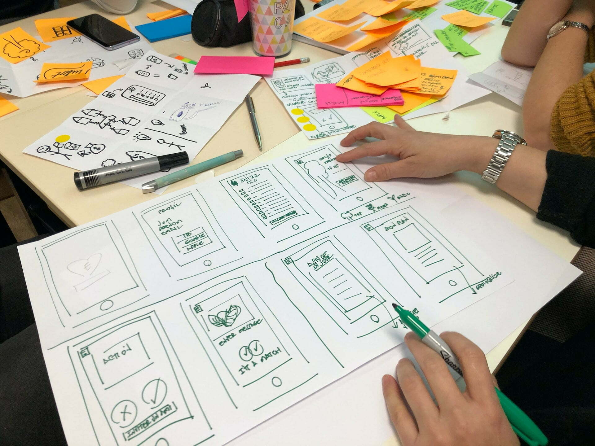
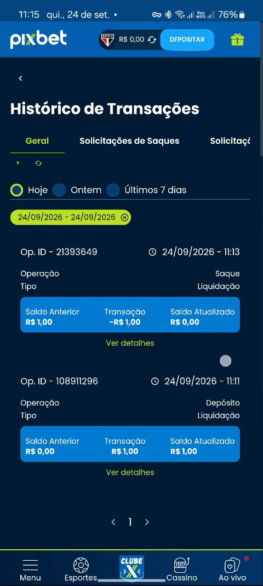

Painel de transações: extrato segregado e autosserviço sob a Portaria SPA/MF nº 1.231
Arquitetura mobile-first em scroll único com segregação Esportes vs. Cassino, histórico de 36 meses e eliminação de cálculo mental de saldo.
1. O Problema
Em setembro de 2026, a Portaria SPA/MF nº 1.231 exigia transparência ativa da conta gráfica do apostador. O extrato legado misturava apostas esportivas e giros de cassino num feed contínuo, sem resultado líquido por categoria. O apostador não conseguia auditar o próprio saldo, e o suporte Nível 1 recebia frequentes pedidos manuais de extrato e contestação de débitos. A demanda veio da PM Tamille Rocha, com prioridade regulatória sobre iniciativas de crescimento.
2. Intervenção de Design
A partir de um MVP funcional gerado no Vercel v0 pela PM Tamille Rocha, estruturei em 24 horas o protótipo de alta fidelidade no Figma integrado aos tokens do design system da CDA. O redesign organiza o extrato mobile em um scroll único: filtros de 7 dias, 30 dias, 12 meses e período personalizado com datepicker limitado a 36 meses por restrição de API; card de visão geral com resultado consolidado e tempo de uso, e um link textual discreto para limites quando o resultado consolidado do período é negativo; detalhamento separado de Apostas Esportivas e Cassino, com Apostas, Ganhos e Resultado líquido em colunas; e feed cronológico de depósitos, saques e apostas com download do extrato oficial em PDF/CSV. Lucro e prejuízo nunca dependem só de cor (usam sinal matemático +/- e cor). As pills de filtro seguem o alvo de toque mínimo de 44px do design system da CDA.
A. Segregação Esportes vs. Cassino com Tríade Matemática Visível
Colunas alinhadas de Apostas, Ganhos e Resultado líquido em cada modalidade, eliminando cálculo mental por parte do apostador.
B. Filtros Modulares com Trava de 36 Meses no Datepicker
Seletor de datas travado na interface em exatamente 36 meses retroativos, prevenindo erros de requisição e timeout de API.
C. Acessibilidade Estrita e Sinal Matemático Explícito
Veto ao uso exclusivo de cor para saldo; valores utilizam prefixo explícito (+R$ e -R$) e contraste WCAG 2.2 AA para daltônicos.
D. Link Contextual para Limites no Cenário Negativo
Exibição de link textual sutil abaixo do resultado geral negativo direcionando ao HUB de Jogo Responsável, sem bloqueio ou tom punitivo.
3. Resultados e Limites de Atribuição
O trabalho passou por revisão heurística interna baseada nas 10 Heurísticas de Nielsen (identificando e corrigindo dois apontamentos de alta prioridade no Figma: a trava de 36 meses no calendário e o link contextual de limites) e parou na homologação de design com Produto, antes das férias coletivas de outubro de 2026. Não há dados de produção nem teste de usabilidade em campo.
O projeto parou na homologação de design com Produto antes do ciclo de férias coletivas da empresa (outubro de 2026). Não há dados de produção nem teste de usabilidade em campo.
A meta de negócio estipulada no briefing era reduzir em 40% os chamados de N1 sobre extrato. Em produção, as métricas a acompanhar seriam o volume de tickets no SAC, taxa de download do extrato oficial e tempo até a primeira interação com o detalhamento por categoria.
4. Telas & Fluxos Mobile-First e Desktop
Abaixo, a interface de alta fidelidade desenhada para desktop e as principais telas do fluxo mobile-first com segregação de produtos e auditoria:

Visão consolidada desktop: histórico detalhado com cálculo de P&L líquido, status de liquidação e filtros rápidos.

Extrato segregado de apostas esportivas no mobile com status em tempo real.
Extrato segregado de sessões e giros de cassino com saldo resultante.
Filtros temporais dinâmicos (7d, 30d, 90d, custom) para histórico de 36 meses.
Detalhamento individual da aposta com comprovante e ID para autoatendimento.